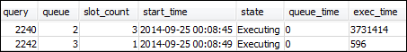

Les traductions sont fournies par des outils de traduction automatique. En cas de conflit entre le contenu d'une traduction et celui de la version originale en anglais, la version anglaise prévaudra.
Section 4 : Utilisation de wlm_query_slot_count pour remplacer temporairement le niveau de concurrence d'une file d'attente
Parfois, les utilisateurs peuvent avoir temporairement besoin de plus de ressources pour une requête donnée. Si tel est le cas, ils peuvent utiliser le paramètre de configuration wlm_query_slot_count pour remplacer temporairement la manière dont les emplacements sont alloués dans une file d'attente de requêtes. Les emplacements correspondent aux unités de mémoire et à l'UC utilisées pour traiter les requêtes. Vous pouvez remplacer le nombre d'emplacements lorsque vous avez des requêtes occasionnelles qui nécessitent un grand nombre de ressources dans le cluster, comme lorsque vous effectuez une opération VACUUM dans la base de données.
Vous constatez peut-être que les utilisateurs ont souvent besoin de définir wlm_query_slot_count pour certains types de requêtes. Si tel est le cas, envisagez d'ajuster la configuration de la gestion de la charge de travail et de proposer aux utilisateurs une file d'attente mieux adaptée aux besoins de leurs requêtes. Pour de plus amples informations sur la substitution temporaire du niveau de concurrence à l'aide du nombre d'emplacements, veuillez consultez wlm_query_slot_count.
Étape 1 : Remplacer le niveau de concurrence à l'aide de wlm_query_slot_count
Dans le cadre de ce didacticiel, nous exécutons la même requête SELECT de longue durée. Nous l'exécutons sous l'identité de l'utilisateur adminwlm en utilisant wlm_query_slot_count pour augmenter le nombre d'emplacements disponibles pour la requête.
Pour remplacer le niveau de concurrence à l'aide de wlm_query_slot_count
-
Augmentez la limite de la requête pour vous assurer que vous avez assez de temps pour interroger la vue WLM_QUERY_STATE_VW et afficher un résultat.
set wlm_query_slot_count to 3; select avg(l.priceperticket*s.qtysold) from listing l, sales s where l.listid <40000; -
Maintenant, interrogez WLM_QUERY_STATE_VW avec l'utilisateur administrateur pour voir comment la requête s'exécute.
select * from wlm_query_state_vw;Voici un exemple de résultat.
Notez que le nombre d'emplacements pour la requête est 3. Ce nombre signifie que la requête utilise les trois emplacements pour traiter la requête et alloue la totalité des ressources de la file d'attente à cette requête.
-
Maintenant, exécutez la requête suivante.
select * from WLM_QUEUE_STATE_VW;Voici un exemple de résultat.

Le paramètre de configuration wlm_query_slot_count est valide pour la séance en cours uniquement. Si cette séance expire ou qu'un autre utilisateur exécute une requête, la configuration WLM est utilisée.
-
Réinitialisez le nombre d'emplacements et exécutez à nouveau le test.
reset wlm_query_slot_count; select avg(l.priceperticket*s.qtysold) from listing l, sales s where l.listid <40000;Voici quelques exemples de résultats.


Étape 2 : Exécuter les requêtes à partir de différentes séances
Ensuite, exécutez les requêtes à partir de différentes séances.
Pour exécuter les requêtes à partir de différentes séances
-
Dans les première et deuxième fenêtres RSQL, exécutez la commande suivante pour utiliser le groupe de requêtes de test.
set query_group to test; -
Dans la première fenêtre RSQL, exécutez la longue requête suivante.
select avg(l.priceperticket*s.qtysold) from listing l, sales s where l.listid <40000; -
Pendant que la requête de longue durée s'exécute dans la première fenêtre RSQL, exécutez les commandes suivantes. Elles augmentent le nombre d'emplacements pour utiliser tous les emplacements pour la file d'attente, puis commencent à exécuter la requête de longue durée.
set wlm_query_slot_count to 2; select avg(l.priceperticket*s.qtysold) from listing l, sales s where l.listid <40000; -
Ouvrez une troisième fenêtre RSQL et interrogez les vues pour afficher les résultats.
select * from wlm_queue_state_vw; select * from wlm_query_state_vw;Voici quelques exemples de résultats.


Notez que la première requête utilise l'un des emplacements alloués à la file d'attente 1 pour exécuter la requête. De plus, notez qu'une requête est en attente dans la file d'attente (
queueda pour valeur1etstatea pour valeurQueuedWaiting). Une fois la première requête terminée, la deuxième commence à s'exécuter. Cette exécution se produit parce que les deux requêtes sont acheminées vers le groupe de requêtestestet la deuxième requête doit attendre qu'il y ait un nombre suffisant d'emplacements pour commencer le traitement.